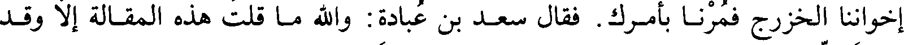

File: 000780.gt.txt (if the image is defective, simply delete all Arabic text and the line will be excluded)

قال أسيد بن حضير يا رسول الله إن يكونوا من الأوس نكفكهم(2) وإن يكونوا من
File: 000781.gt.txt (if the image is defective, simply delete all Arabic text and the line will be excluded)

إخواننا الخزرج فمرنا بأمرك فقال سعد بن عبادة والله ما قلت هذه المقالة إلا وقد
File: 000782.gt.txt (if the image is defective, simply delete all Arabic text and the line will be excluded)

عرفت أنهم من الخزرج ولو كانوا من قومك ما قلت هذا
File: 000783.gt.txt (if the image is defective, simply delete all Arabic text and the line will be excluded)

فقال أسيد كذبت ولكنك منافق تجادل عن المنافقين وتثاور الناس حتى كاد
File: 000784.gt.txt (if the image is defective, simply delete all Arabic text and the line will be excluded)

يكون بينهم شر ونزل رسول الله صعلم ودعا علي بن أبي طالب وأسامة بن زيد
File: 000785.gt.txt (if the image is defective, simply delete all Arabic text and the line will be excluded)

فاستشارهما فأما أسامة فأثنى خيرا وأما علي فقال ن النساء لكثير وسل الخادم
File: 000786.gt.txt (if the image is defective, simply delete all Arabic text and the line will be excluded)

تصدقك فدعا رسول الله صعلم بريرة يسألها فقام إليها علي فضربها ضربا شديدا
File: 000787.gt.txt (if the image is defective, simply delete all Arabic text and the line will be excluded)

وهو يقول اصدقي رسول الله فقالت والله ما اعلم إلا خيرا وما كنت أعيب عليها
File: 000788.gt.txt (if the image is defective, simply delete all Arabic text and the line will be excluded)

إلا أنها كانت تنام عن عجينها فتأتي الداجن فتأكله(3
File: 000789.gt.txt (if the image is defective, simply delete all Arabic text and the line will be excluded)

ثم قالت دخل علي رسول الله صعلم وعندي أبواي وامرأة من الأنصار وأنا أبكي وهي
File: 000790.gt.txt (if the image is defective, simply delete all Arabic text and the line will be excluded)

تبكي فحمد الله وأثنى عليه ثم قال يا عائشة إنه قد كان ما بلغك من قول الناس فإن
File: 000791.gt.txt (if the image is defective, simply delete all Arabic text and the line will be excluded)
كنت قارفت سوءا فتوبي إلى الله
File: 000792.gt.txt (if the image is defective, simply delete all Arabic text and the line will be excluded)

قالت فوالله لقد تقلص دمعي حتى ما أحس منه شيئا وانتظرت أبواي أن يجيباه
File: 000793.gt.txt (if the image is defective, simply delete all Arabic text and the line will be excluded)
فلم يفعلا فقلت ألا تجيبانه فقالا والله ما ندري بما نجيبه وما أعلم أهل بيت
File: 000794.gt.txt (if the image is defective, simply delete all Arabic text and the line will be excluded)
دخل عليهم ما دخل على أبي بكر تلك الأيام فلما أن استعجما علي بكيت ثم قلت والله لا